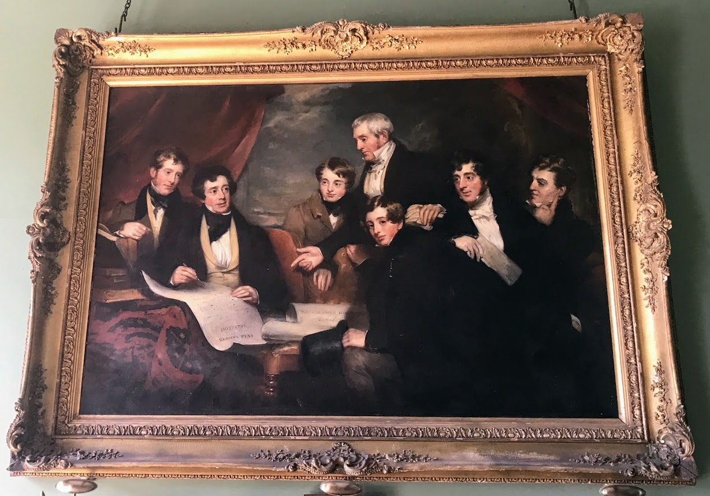

Barrington's Bridge
Welcome to History page
Barrington, Sir Matthew life time achievement
Barrington, Sir Matthew (1788–1861), 2nd baronet, benefactor, lawyer, and landowner, was born 21 May 1788 in Limerick, eldest of five sons and two daughters of Joseph Barrington (qv), pewterer, and Mary Barrington (née Baggott). Educated in Limerick and King's Inns (1804–9), he established a thriving solicitor's practice in Dublin and Limerick before being appointed (1814) to the prestigious and lucrative post of crown solicitor for Munster, which he held until his death. He presided during a period of considerable political and agrarian unrest and was greatly respected for his integrity and professional judgement. He corresponded with Daniel O'Connell(qv), whom he allowed to organise a meeting (June 1843) on his estate, which attracted 200,000 people. Elected (1839) to the River Shannon commission to advise on its use in the public interest, he was solicitor and adviser to the Great Southern & Western Railway from the 1840s; he selected (1848) the site and chose the name for Limerick Junction, notorious for the idiosyncratic manoeuvres of its arriving and departing trains.
He amassed a considerable fortune and was faithful to the commitment made to the electors of Limerick when, declining (1832) the invitation to stand as their MP, he declared that he would ‘do all in my power to further . . . the improvement of my native city – the employment of its population and the relief of the distressed poor’ (Varebeke, 19). His greatest contribution was the founding of Barrington's Hospital and City of Limerick Infirmary; the first general hospital to be established in Limerick, it provided for the poor and was built on George's Quay, the area of greatest destitution. An act of parliament (1830), on the management of the hospital, included Matthew and his father and brothers as governors; though a family enterprise, it was Matthew's money and business expertise that underpinned the venture, which cost £10,000.
A handsome three-storey cut stone building designed by Frederick Darley (qv), it was surmounted by an illuminated clock, the only one of its kind in the south of Ireland. Originally for sixty patients, it was staffed with highly qualified personnel and opened in 1831; between 1832 and 1840 it admitted 2,836 patients and treated over 100,000 out-patients, and became one of Limerick's foremost institutions until its closure (1988). A ‘voluntary’ hospital, it received state aid but depended mainly on public subscriptions. To redeem its failing finances (and also to eliminate the exploitation of the poor by pawnbrokers), Barrington established (1837) the first mont-de-piété in the British Isles, a charitable pawn-shop which supplied loans at a low rate of interest. Its anticipated profits were not realised and it ceased trading in 1845, Barrington making good the debt incurred. An attractive building designed by Dublin architect William O'Hara, it was converted (1845) into a convalescent hospital for fever patients, was subsequently leased (1847) as a police barrack, and was demolished in 1892.
Barrington's Family life
Barrington acquired his first land in Co. Limerick by his marriage dowry (1814) and leased (1818) and subsequently bought a great estate to the east of the city. He built (1818) Barrington Bridge, laid out a magnificent park, importing trees from America, Australia, and Asia (planting 143,000 in 1822–3 alone, according to his ‘Memorandum as to planting, 1822–51’), created an artificial lake, and by 1825 had developed the village of Murroe for workmen in readiness for the building of Glenstal Castle. Designed by London architect William Bardwell (1795–1890) and begun c.1835, it is a massive Norman-revival castle built in local red sandstone; enriched with remarkable stone carvings, it reveals an early appreciation of Celtic revival sculpture with an elaborately carved internal doorway which is a replica of the superb Hiberno-Romanesque door in Killaloe cathedral, Co. Clare. The castle, bought in 1926 for the Benedictine order, became a priory with (from 1932) a secondary boarding school; in 1957 it was elevated to the status of an abbey.
Open-hearted and unpretentious, Barrington was also an improving landlord: he planted 600 acres of forest, reclaimed land, and during the great famine (1840s) extended his castle (probably to provide employment for local people) and exacted little or no rent from his tenants. He provided the land and built (1852) a national school in Murroe out of stone quarried from his land, and contributed to the development of Limerick city, building docks and bridges – including Wellesley (later renamed Sarsfield) Bridge (1835) with Thomas Spring Rice (qv) – and also houses, being a member of the Pery Square Tontine Co., established in 1840 to build, and subsequently rent and lease, elegant Georgian houses in Pery Square.
He was elected MRIA (1828 x 1836) and succeeded (1846) to the baronetcy, having been instrumental in procuring the title in 1831 for his father. A family portrait depicting Sir Matthew, his father and brothers, painted by Martin Cregan (qv) and originally hung in the board room of Barrington's Hospital, now hangs in Glenstal Abbey, where the Barrington papers are preserved. He died 1 April 1861 and was buried in the family vault in St Mary's cathedral, Limerick, where the west window was restored by his friends as a memorial. He married (1 January 1814) Charlotte, daughter of William Hartigan (qv); they had two sons and six daughters. His fourth daughter, Olivia Barrington married (1853) G. A. C. May (qv), lord chief justice of Ireland, and his youngest daughter, Henrietta Victorine Barrington married (1857) W. R. Le Fanu (qv), chief commissioner for public works, Ireland.